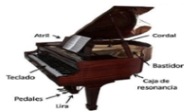
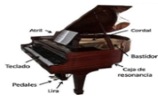

PIANO DE COLA
Definición
El piano de cola es un tipo de piano, pero que se diferencia de las por el hecho de que su caja de resonancia y sus cuerdas están en posición horizontal. Este tipo de instrumento tiene una tapa en la parte superior que puede ser abierta para que los sonidos ejecutas por las cuerdas puedan salir al exterior.
 

Tamaño
El tamaño del piano de cola puede variar de acuerdo a las preferencias del fabricante, pero en terminos generales pueden tener las siguiente medidas:
-
PIANO DE COLA MIGNON : Tiene hasta 130 cm de longitud.
-
PIANO DE UN CUARTO DE COLA : Tiene de 131 hasta 189 cm de longitud.
-
PIANO DE MEDIA COLA : Tiene de 190 hasta 225 cm de longitud.
Cantidad de notas
En cuanto a la cantidad de notas, los pianos se clasifican en dos grandes grupos:
-
Pianos de 85 notas.
-
Pianos de 88 notas.